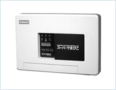
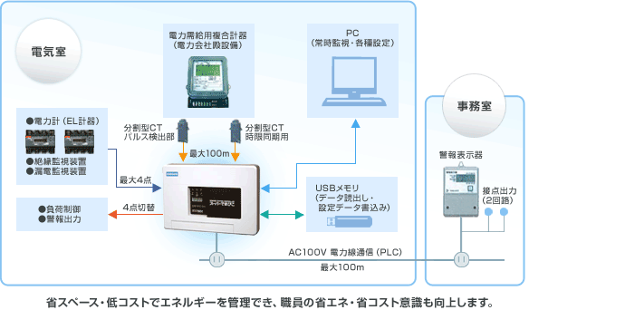

本装置は電気の使用状況を把握し、現在電力が目標電力を超過すると、警報及び制御信号を出力して、手動及び自動での負荷制御を可能にします。
設備を効率的に使用することにより、お客さまの電力コストを最小限に抑えます。
電気料金の無駄を「スーパーでまぴこ」が解消します！
| 一般仕様 | 電源 | AC100V±10% 50／60Hz共用 20VA以下（PLC非送信時） |
|---|---|---|
| 本体外形寸法・質量 | 外形 ： W 255 × H 180 × D 60（mm） 質量 ：約1.3kg | |
| パルス入力 | パルス検出部 | 1点：分割形CT（接続ケーブル10m・オプションで延長可） 50,000pulse／kWh |
| 入力 | 外部警報またはパルス入力 | 入力 4点（DC35V以下） ［入力（警報またはパルス）は切替選択］ |
| 出力 | 電力線通信出力 | デマンド警報：2点 外部機器警報監視：4点 |
| 警報又は制御出力 | 4点 （無電圧a接点AC220V1A：抵抗負荷） ［出力（警報または制御）切替選択］ | |
| 通信ポート | RS-232C および USBポート | |
| その他 | データ保存容量 | デマンドデータ：日報（13ヶ月）月報（3年）年報（10年） 各種警報：1000点 停電履歴：50点 等 |

ご相談は営業開発部 Tel. 06-6458-7936